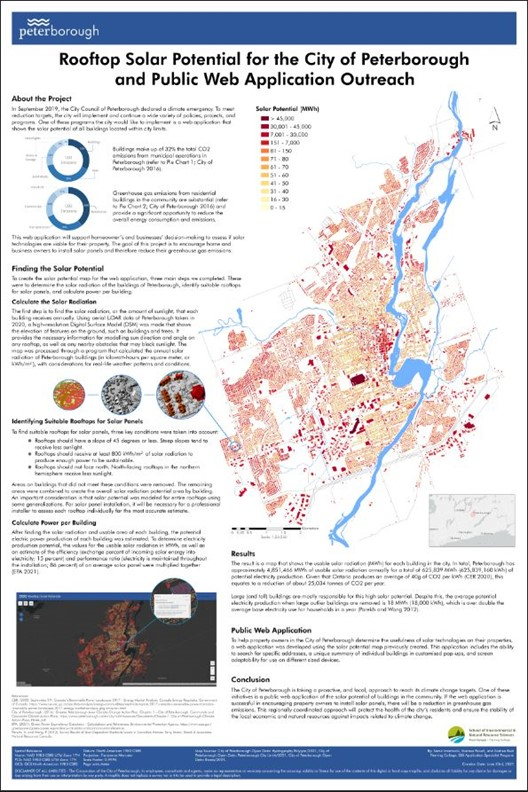

Rooftop Solar Potential Application
Fleming GIS Collab Project | 2021
Welcome to our project website!
What's this all about? In collaboration with the City of Peterborough, we built an interactive web map that shows solar potential of building rooftops in Peterborough so that public and private property owners can determine if solar panel installations are a viable solution for their buildings.
How did we do this? The solar potential layer was created using Solar Radiation tools in ArcGIS Pro and is based on a high-resolution Digital Surface Model (DSM) created from lidar point data. The web application was developed using Experience Builder - one of Esri's latest configurable apps available through ArcGIS Online - and allows users to find their building on a map and display the solar potential values in a customised pop-up display.
Why is this application relevant? This application stands out from other solar potential maps of Peterborough by providing localised estimates of solar radiation produced from high resolution lidar data and local weather patterns and conditions. It is an accessible and easy to use application that will help encourage the use of rooftop solar panels in the city.
Meet the Team
Samir Imamovic
Sam is a recent graduate of the University of Toronto specializing in ecology and evolutionary biology. Through his educational experience he has gained skills in data management and analysis and report writing. Additionally, his current enrollment in the Fleming college GIS specialist program has taught him how to perform and display results of analysis on spatial data.
E-mail: Samir.Imamovic@flemingcollege.ca

Marissa Powell
Marissa is a former teacher who specialized in elementary instruction and museum education. She is in the application specialist stream of Fleming College’s GIS program, with a personal interest in imagery analysis. Marissa has a wide area of experience and can adapt and complete a variety of tasks. In her experience with the Fleming College, and her former career, Marissa brings a wealth of information regarding community engagement and GIS knowledge.
E-mail: Marissa.Powell@flemingcollege.ca

Andrea Reid
Andrea is an ecologist with experience in biodiversity research and conservation genetics. She has spent a lot of time working 'on the ground' in many different environments across three different continents. Now, equipped with a new skillset acquired from the GIS Applications Specialist program at Fleming College, she is excited to be able to use state of the art GIS technology to explore the world from above!
E-mail: Andrea.Reid2@flemingcollege.ca
Check out Andrea's website here
View Andrea's StoryMap here
Solar Potential Layer
Modeling solar potential of city rooftops with relatively high accuracy was possible due to the availability of high resolution lidar point data provided by the City of Peterborough. The lidar data allowed us to create a detailed Digital Surface Model (DSM) for modeling the influence of rooftop structures and nearby obstructions on the total amount of solar radiation received by a building. Due to the very high resolution of the DSM (30cm), the processing time of the Area Solar Radiation tool in ArcGIS Pro was increased significantly and it was necessary to split the DSM up into smaller subsections to run simultaneously on three separate computers. Overall, the analysis took close to two weeks to complete.
The resulting solar layer is displayed below, symbolised as Usable Solar Radiation and Electricity Production per year. The large (and often taller), flat-roofed buildings characteristic of the central downtown area show some of the highest potentials. There is also a trend toward higher solar radiation on the periphery neighbourhoods of the city. These neighbourhoods are often newer developments with a reduced tree canopy.
Based on the analysis, the City of Peterborough can potentially produce 625,839,160 kWh of electricity per year from rooftop solar power. This equates to a reduction of about 25,034 tonnes of CO2 per year, which is more than enough to meet the City's Climate Change Strategy to reduce emissions by making current buildings more energy efficient (check out Peterborough's Climate Change Action Plan here).
Large buildings are noticeable outliers and produce the highest potentials. When the top 179 buildings with highest solar potential were removed from the analysis, the average rooftop solar potential dropped from 24,000 to 18,000 kWh. Despite this, buildings in Peterborough do on average have the potential to meet their electricity consumption (i.e., 6,920 kWh base electricity use per year; Parekh and Wang 2012) by installing solar panels.
Usable Solar Radiation

Electricity Production

Web Application
Our final web app solution was created using Esri's ArcGIS Experience Builder. Click here to view the application or use the interactive iframe below.
Snapshots of Web App
Cartographic Poster
We created a final poster to help the City of Peterborough disseminate the results of this project to interested members of the public and to policy makers. It will additionally inform property owners of the existence of the new web app available to them.
